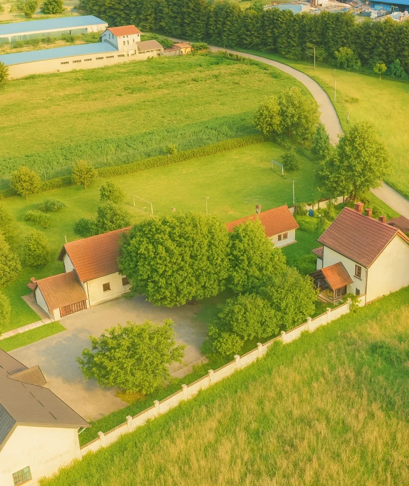

UKLJUČI SE
Vaše vrijeme i znanje.
Zajedničke mogućnosti.
Pontes ne gradimo sami. Ljudi se mogu uključiti svojim vremenom, znanjem, iskustvom, suradnjom ili podrškom – na način koji odgovara njihovim mogućnostima i stvarnim potrebama našega života i rada.
Ne mora svaki doprinos izgledati isto. Netko će doći i pomoći vlastitim rukama, netko će prenijeti stručno znanje, netko će otvoriti prostor za suradnju, a netko će podržati ono što gradimo financijski ili materijalno. Važno nam je da svaki oblik uključivanja bude konkretan, odgovoran i povezan s ljudima i onime što u tom trenutku doista gradimo i živimo.

Volontiranje
Darujte vrijeme, znanje i prisutnost.
Volontiranje može biti fizička pomoć, stručni doprinos ili prijenos znanja koji ostaje i nakon što volonter ode.
Saznajte više →
Partnerstva i suradnja
Povežimo iskustvo, stručnost i mogućnosti.
Surađujemo s ljudima, tvrtkama, ustanovama i organizacijama koje žele zajedno s nama stvarati konkretne prilike za obrazovanje, rad i razvoj.
Razgovarajmo o suradnji →
Donacije
Podrška koja omogućuje kontinuitet i razvoj.
Donacije pomažu održavati svakodnevni život kuće, razvijati projekte i stvarati uvjete u kojima ljudi mogu učiti, raditi i pripremati se za samostalan život.
Podržite Pontes →SVAKI DOPRINOS IMA SVOJE MJESTO
Ne morate učiniti sve da biste učinili nešto važno.
Vrijeme, znanje, suradnja ili podrška mogu postati dio nečijega novog početka.
Javite nam se →